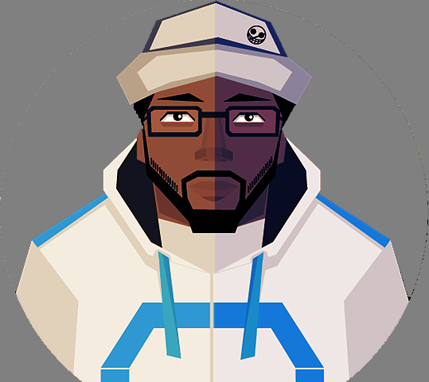

Hydro Creative Director
My role and responsability
The role that of the creative direct is to produces promotional materials by developing basic presentation approaches; directing layout, design, and copy writing;
determining and monitoring production schedules; providing work direction to staff.
Constantly nourish and develop your creative side. That doesn't just mean hone your skills in particular software or become great at recognizing Pantone swatches.
It means think about what makes people love the way things look to them. It's more than just making something look good, it's about making it look right for the selected audience.
You're never going to please everybody. Stop trying to.
Creative directors are usually in charge of the design team, which goes from junior to senior designers, any web based creative also.
I also would say that the creative director is responsible for anyone in the company when it comes down to how things are going to look.
You need to have a real understanding and love for your company because you are looking after its image.